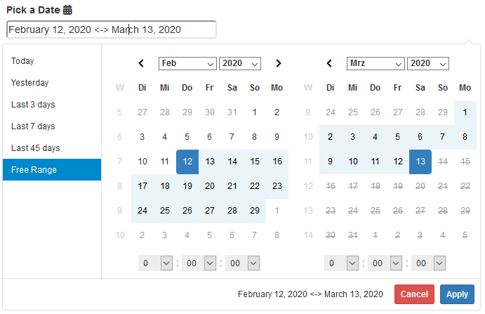

Custom Shiny input binding for a Date Range Picker.
Installation from CRAN
install.packages("daterangepicker")or the dev version:
# install.packages("remotes")
remotes::install_github("trafficonese/daterangepicker")Example
A basic example of a Date Range Picker:
library(shiny)
library(daterangepicker)
## UI ##########################
ui <- fluidPage(
daterangepicker(
inputId = "daterange",
label = "Pick a Date",
start = Sys.Date() - 30, end = Sys.Date(),
style = "width:100%; border-radius:4px",
icon = icon("calendar")
),
verbatimTextOutput("print"),
actionButton("act", "Update Daterangepicker"),
)
## SERVER ##########################
server <- function(input, output, session) {
output$print <- renderPrint({
req(input$daterange)
input$daterange
})
observeEvent(input$act, {
updateDaterangepicker(session, "daterange",
start = Sys.Date(),
end = Sys.Date() - 100)
})
}
shinyApp(ui, server)Further examples are in /inst/examples/
Further Information
Check out the Configuration Generator for a Live-Demo of the different options.